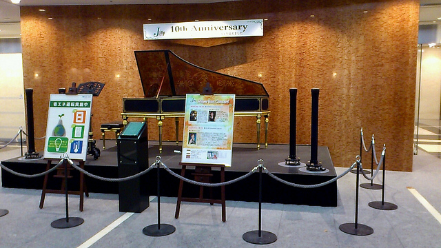

株式会社万葉はこの4月、おかげさまで創立6周年を迎えます。
これを記念して、常日頃お世話になっているRubyコミュニティの方々をお迎えし
ささやかな勉強会を催したいと思います。
より多くの皆様にご参加いただけるよう、メイン会場は神保町仲間の (株)IIJ様 にご協力いただくこととしましたが
サテライト会場として万葉オフィスにUST上映と無限たこ焼きをご用意いたします。
発表の合間に、ぜひ私たちのオフィスにもお立ち寄りください！
株式会社インターネットイニシアティブ様 17F会議室 (地図)
当日は 1階のエレベーターホールは施錠されており、自由に入場できません。
集合時刻に北エントランスホールのチェンバロ前までお集まりください。
出場はいつでも自由にできます。
神保町三井ビルディング 1階 (フロアMap)
北エントランスホール チェンバロ前

株式会社万葉 (会社概要・地図)
一般参加者募集は終了しました。
たくさんのご応募ありがとうございました。
LT発表者募集は終了しました。
たくさんのご応募ありがとうございました。
懇親会参加者募集は終了しました。
たくさんのご応募ありがとうございました。
| 時間 | セッション | |
|---|---|---|
| 11:00- | サテライト会場 開場 | |
| 12:30- | メイン会場 開場 | |
| 13:00-13:10 | オープニング | |
| 13:10-13:50 | 基調講演 | 島田浩二 『世界のコミュニティの会社の私から - There are no more islands』 |
| 13:50-14:00 | 休憩(10分) | |
| 14:00-14:30 | 基調講演 | 大場寧子 『世界を描く - Drawing the world』 |
| 14:30-14:40 | 休憩(10分) | |
| 14:40-15:05 | 会場スポンサーLT(5分) | 株式会社 インターネットイニシアティブ 阿部 博 『IIJ と Ruby に絡む5つの「M」』 |
| 招待LT (5分 * 3) |
角谷 信太郎 | |
| 和田 卓人 | ||
| 小泉 剛 『万葉の楽しみ方』 | ||
| 15:05-15:15 | 休憩(10分) | |
| 15:15-16:30 | LT - 前半 (5分 * 12) |
@jugyo 『Twitter』 |
| Tomohiro Hashidate (@joker1007) 『ふつうのプログラマーが食っていくために』 | ||
| Yusuke Ando (@yando) 『万葉の皆様にも是非オススメしたいPaaS、Engine Yard Cloud』 | ||
| こしばとしあき (@bash0C7) 『万葉が変えた家族生活』 | ||
| 社員LT - K1 | ||
| みかみよしゆき (@yoshuki) 『ぼくと万葉とわたし』 | ||
| 社員LT - K2 | ||
| @2celeb 『ぼくと万葉』 | ||
| Takeshi Yabe (@tyabe) 『Why Padrino ?』 | ||
| Koichiro Ohba (@koichiroo) 『 万葉創世記』 | ||
| 小栁 真太 (@yancya) 『RubyWorld Conference 2012 に何で行ったのか』 | ||
| Hiro Yoshioka (@hyoshiok) 『Ruby and I - Rubyとたわし』 | ||
| 16:30-16:40 | 休憩(10分) | |
| 16:40-17:40 | LT - 後半 (5分 * 9) |
Motoyuki TERAJIMA (@trmmy) 『Enumerable#lazy時代の無限たこ焼き -はじめました- やめました』 |
| Takayuki SHIMIZUKAWA (@shimizukawa) 『ドキュメントジェネレータSphinxの紹介』 | ||
| 社員LT - O1 | ||
| @kwappa (SHIOYA, Hiromu) 『somewhere.rbのたのしみ』 | ||
| Ayumu Aizawa (@ayumin) 『エア顧問退任のご報告』 | ||
| 社員LT - S 『緊急告知』 | ||
| Satoshi Ebisawa (@satococoa) 『ベルギー訪問記』 | ||
| Tadashi Sawada (@cesare) 『道楽の Ruby』 | ||
| 社員LT - O2 『エア社員としてひとこと』 | ||
| 17:40-17:50 | クロージング | |
当日の様子にご興味がある方は、ぜひ toggeter や UST録画 をご覧ください。
資料に万葉ロゴをお使いになりたい場合は、こちらからダウンロードできます。